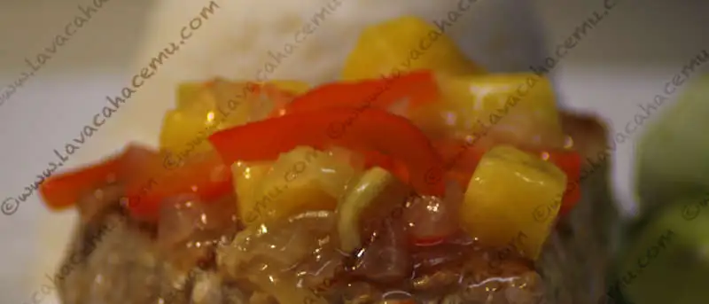

Atún Thai Agridulce

{kind=link}
Esta receta salió de un libro que encontramos en una de esas tiendas de saldos baratito, baratito, de comida thailandesa, lo cual nos provee de nuevas combinaciones de sabores e ideas.
Ingredientes
- 2 filetes de atún
- 1/8 cta pimienta negra
- 1 cda aceite de cacahuate u otra de alto calor
- 1/2 cebolla en cubos
- 1/2 pimiento rojo en julianas cortas
- 1/2 diente de ajo, molido
- 1/4 de pepino sin semillas y en julianas cortas
- 1 rebanada de piña en cubos
- 1/2 cta gengibre fresco finamente picado
- 1/2 cda azúcar moreno
- 1/2 cda maicena
- jugo de 1 limón ~ 3/4 cda
- 1/2 cda salsa de pescado
- 1/3 tza agua o caldo de pescado
Procedimiento
- Espolvorea los filetes de atún con pimienta por ambos lados
- Calienta un sartén de fondo grueso y agrega un poco de aceite para cubrir
- Cocina los filetes por 8 minutos, volteándolos una vez (o hasta el término desead0)
- Mientras, calienta el aceite restante en otro sartén, agregando la cebolla, pimiento y ajo
- Cocina las verdudas unos3~4 minutos
- Retira del fuego el sartén y agrega el azúcar, pepino, piña y gengibre
- Combina la maicena con el jugo de limón y la salsa de pescado, agrega esta mezcla al caldo
- Regresa el sartén a fuego medio, agrega el caldo y deja hervir unos 2 o 3 minutos, revolviendo ocasionalmente hasta que espese.
- Sirve la salsa sobre el atún, adorna con rebanadas de limón o pepino y acompaña de arroz blanco